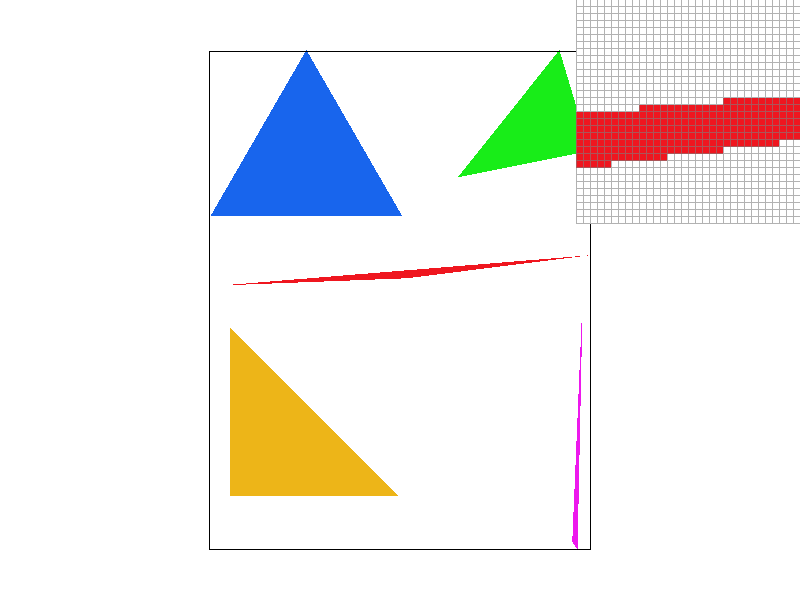
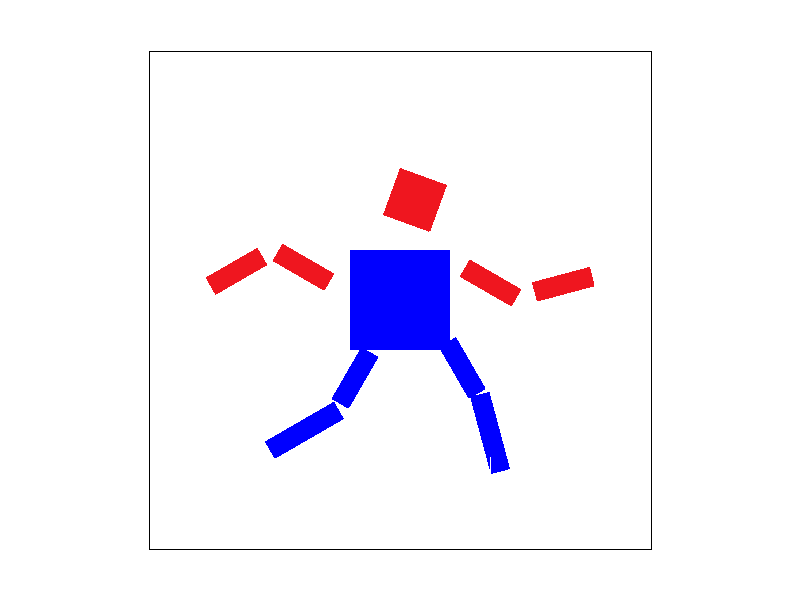

Overview
In this project, we mainly explored image rasterization. Rasterization mainly refers to the process of converting a series of geometric data into pixels, through which various digital images can be generated. Rasterization tasks include drawing of triangles, supersampling, graphic transformation and texture mapping. Based on triangle rasterization, we have implemented various function including anti-aliasing using supersampling, shading using linear interpolation coloring with vertices, and texture mapping with different methods related to mipmap.
Section I: Rasterization
Part 1: Rasterizing single-color triangles
First, we will check whether the vertices are in counterclockwise order. If not, we will swap them. Second, we check whether the sample points within the bounding box are inside the triangle using Three Line Tests. If the sample point is inside the triangle, we will change its color to red in the sample buffer. Since our algorithm check all points within the bounding box, it is exactly the same as one that checks each sample within the bounding box of the triangle.
Part 2: Antialiasing triangles
The supersampling algorithm divides each simple inside the triangle into 1 * sample rate number of samples. The sample buffer will be resized to 1* sample rate * size. Every 1 * sample rate number of points are continuous in the sample buffer. We will check whether the divided samples are inside the triangle. If so, we will change its color to red in the sample buffer. Before resolving to framebuffer, we will calculate the average color of the divided samples. Then we will send the average color to the framebuffer. Supersampling is useful for antialiasing. Supersampling will increase the image quality through sampling extra points and calculating the average data. We defined a new function super_sample_fill_pixel. The new function accepts an additional parameter bias, which is the offset of the divided samples. The offset ranges from 0 to sample rate – 1. For example, at sample rate 4, the first group of divided samples occupy index 0, 1, 2, 3 of the sample buffer. And when the sample rate changes, the sample buffer will be resized to 1 * sample rate * size. Supersampling calculates the average color of the divided samples, so the edges of the image will become smoother.

|

|

|

|
Part 3: Transforms
We try to let the cube man run.
Section II: Sampling
Part 4: Barycentric coordinates
In this task, we will use the Barycentric coordinates formula to perform linear interpolation shading according to vertex color. The barycentric coordinate is a way to express the position of a point using a triangle. It is a linear combination of triangle vertex coordinates, where the sum of three weights is 1. Different weights reflect different point positions. In addition to coordinates, the variables in the linear combination can also be colors, normal vectors, etc. This property can be used for linear interpolation, and the interior of the triangle can be smoothly colored according to the color of the vertex. The following two figures show the linear interpolation coloring results of a triangle and a circle respectively.

Part 5: "Pixel sampling" for texture mapping
In this task, we mainly implement the texture mapping of the nearest neighbor sampling and bilinear interpolation method when the mipmap level is 0. The main principle of pixel sampling of texture mapping is: given the surface coordinates and texture coordinates of three vertices of a triangle, as well as the surface coordinates of a sampling point, we can calculate the weight through the barycentic coordinate formula to derive the texture coordinates of the sampling point on the texture image. Then the texture coordinates are used for sampling. The sampling methods include nearest neighbor sampling and bilinear interpolation. Nearest neighbor sampling directly selects the nearest texel as the target pixel. However, when the texture image is too small, this method will cause multiple pixels to map to the same texel, making the image appear mosaic. Linear interpolation can better solve this problem, using four adjacent texels for color averaging to make the image smoother and reduce aliasing. The followings are four png screenshots using near sampling at 1 sample per pixel, near sampling at 16 samples per pixel, bilinear sampling at 1 sample per pixel, and bilinear sampling at 16 samples per pixel. It can be seen that at the same sampling rate, the nearest neighbor samples have obvious white gaps and jaggies; However, the bilinear interpolation graph is relatively smooth (more obvious when using pixel inspector in the figure below--the mosaic in nearest neighbor sampling is sharper, and is more blurred in bilinear interpolation). Under the same sampling method, the higher the sampling rate, the smoother the image. When the sampling rate is low, each pixel sampled by the nearest neighbor will correspond to more texels in the texture, and more information will be lost, which is more likely to cause more jaggies, and will have more difference from bilinear interpolation.

|

|

|

|

|

|
Part 6: "Level sampling" with mipmaps for texture mapping
In this task, we mainly implement texture mapping with different levels of mipmap, which involves the nearest mipmap level method and linear filtering. When obtaining the level of mipmap, we first use the barycentric coordinates to calculate the uv coordinates of the sampling point (x, y) and the auxiliary point (x+1, y) (x, y+1) respectively in the rasterization section. Because dx and dy are both 1 here, we can directly subtract the sampling points from them to obtain the derivative vectors of u, v to x, y respectively. Take the maximum of the norms of two derivatives, and take the logarithm to get the level in floating number. If we use the nearest neighbor level method, the level is directly rounded to get the final level; If we use linear filtering, find the two levels adjacent to it by rounding up/down, sample the color under the two levels respectively, and finally carry out weighted average. Among the three methods of pixel sampling, level sampling, and the number of samples per pixel, the anti-aliasing power of pixel sampling is the weakest, mipmap level is medium, and supersampling is the strongest; But the speed of single-pixel sampling is the fastest and the memory consumption is the smallest, the mipmap level is medium, the supersampling speed is the slowest, and the memory consumption is the most. The following four pictures show the texture mapping of the Lamborghini car map we selected under different methods: (four combinations are L_ZERO and P_LEAREST, L_ZERO and P_LEAEAR, L_LEAREST and P_LEAREST, as well as L_LEAREST and P_LEAEAR) It can be seen that when the mipmap level is the same, bilinear interpolation will perform better than the nearest neighbor sampling; When the sampling method is the same, the higher the level, the smoother the texture mapping image will be. According to the pixel inspector, it is more obvious that the pixel under "L_NEAREST and P_LINEAR" combination will be relatively fuzzy with few jaggies.

|

|

|

|